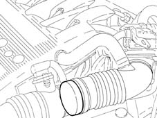
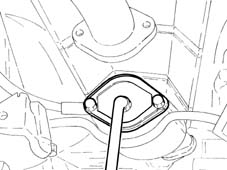

1072A Intake and exhaust system leakage check
- Path
- Test > 10 ENGINE > 1072 INLET AND EXHAUST MANIFOLDS > 1072A Intake and exhaust system leakage check
- Kind
- test / check procedure
- Applies to
- engines: 1.6 TS, 2.0 TS; all production periods
- Interactive page
- https://sloeber94.github.io/elrnDB-a147/en/#/3026042
Applies to: engines: 1.6 TS, 2.0 TS; all production periods
Position the vehicle on the ramp.
Working via the engine compartment, disconnect the battery.
Release the band retaining the air flow meter hose and detach it1056B09 hot film air flow meter (debimeter) r + r.

Fit buffer C10125 in the hose and secure it using a band.

Remove the bolts fixing the catalyzer to the centre silencer, remove the two catalyzer support bolts and lower it.
Fit the flange C10126.

Connect the air intake pipe to the pressure regulator network.
Close the regulator tap and set it to a pressure of 0.4 bar.
Connect the regulator outlet pipe to the buffer C10126.
Open the regulator tap.
Check for any air leaks, through a decrease in pressure.
Locate the leaks using special foam.